For version @VERSION@ of the app · @DATE@
Windows, Mac and the browser page served by the ESP32 unit
The pictures in this guide were taken with invented demo data, not from a real scooter.
The numbers you see in your own copy will be different.
Contents
1 What this is about the app and what it does and does not do
2 Getting started open it, try it, connect it
3 The window the menu and the bar at the top
4 Live the dashboard
5 Readings every value as a list
6 Flags the on and off signals
7 Frames recording, replaying, markers, exports
8 Explore working out what an unknown frame means
9 Parameters settings stored in the battery and the ECU
10 Event log what the battery has recorded
11 SD card the card on the unit: recording, files, format
12 Saved views keep your own arrangements
13 On a phone the narrow layout
14 When something goes wrong quick answers
15 Words used in this guide a short glossary
1 What this is
The Silence S01 (SEAT MÓ) electric scooter has a network inside it called a CAN bus. The battery, the motor
controller, the dashboard and the other parts talk to each other on it all the time, in short messages called
frames. This app listens to those messages and shows them: the pack voltage and current, the state of
charge, the cell voltages, the speed, the on and off signals, and every frame the scooter sends, including the ones
nobody has worked out yet.
It comes in two forms that look and work the same. The desktop app (Windows and Mac) talks to the scooter through a
small USB adapter called a CANable. The browser page is served by a small ESP32 unit that sits on the scooter,
and you open it on a phone, tablet or computer over its own WiFi network.
What it does to your scooter. The app mostly listens. It sends read requests: one
request for the battery pack ID when you connect, and the reads you start yourself with the buttons on the Parameters and
Event log screens. It can also switch the scooter's debug mode on, but only when you switch it on
with the Debug mode switch on the Frames or Flags screen. It is off every time you start, so by default the app only listens, which suits a long
recording of an unmodified scooter. Switched on, the app sends debug mode at most twice, only if the scooter does not already report it as on, and
switches it off again when you switch it off or disconnect. That is a single short message, and it is all the app sends in
that message: it never sends the god-mode or output controls that share it. The app does not write settings. The one thing it can write
by your choice is the battery's clock, and only when you press Set battery clock on the Parameters screen and confirm
(section 9). The ESP32 unit's firmware (from app version 0.8.0) is built to refuse to transmit anything else, even if something asked it to.
What you need
Desktop app: a Windows 10 or 11 computer (64-bit), or a Mac with an Apple silicon chip (M1 or later). Nothing to install.
To read a real scooter: a CANable USB adapter with “slcan” firmware, connected to the scooter's CAN connector (the bus runs at
250 kbit/s), or the ESP32 unit. This guide does not cover wiring. Only connect something to the scooter when you know how
its connector is wired.
To try it with no scooter: nothing at all. See “Try it with no scooter” below.
2 Getting started
Open the app
Windows: unzip the folder and double-click s01-monitor.exe. Because the program is not signed,
Windows may say “Windows protected your PC”. Click More info, then Run anyway. If the window is blank, update the graphics driver.
Mac: unzip the folder and double-click Silence S01 (you can drag it to Applications first). The first time,
macOS says it cannot check the app. Right-click (or Control-click) it, choose Open, then Open again. If it still
refuses, open System Settings, Privacy & Security, scroll down and press Open Anyway. You only do this once.
Browser page: join the WiFi network S01-Monitor from the device you want to use (the password is the one
set in the unit's firmware), then open http://192.168.4.1/. On an iPhone you can use the Share button and
Add to Home Screen to open it like an app, without Safari's bars.
Try it with no scooter
Press Simulate in the bar at the top. The Live, Readings and Flags screens fill with sample data. Press Disconnect to stop.
(In a narrow window, Simulate is in the menu marked “…”.)
The simulation makes no CAN frames, so the Frames and Explore screens stay empty. To practise with those, use a recording
(section 7): choose Replay a capture… on the Frames screen and pick a log file.
Connect to a scooter
Desktop: plug in the CANable. Pick its port in the box at the top (on a Mac it looks like /dev/cu.usbmodem…, on Windows
like COM3). The adapter may need its Windows driver installed first. Browser page: the box already holds the unit's address, ws://…/ws.
Press Connect. The line under the title changes to “Connected”, and the screens start to move.
Press Disconnect when you are done. If the connection stops by itself, the app says “The connection stopped unexpectedly”; press
Connect to start again.
3 The window
The menu on the left takes you between the screens: Live, Readings, Flags, Frames, Explore, Parameters and Event log.
The small arrow at the top of the menu hides it to give the screens more room, and shows it again; this helps on a small screen.
The version number is at the bottom of the menu.
The bar at the top is the same on every screen:
Control
What it does
Pack …177
The battery pack's ID (the last three digits). Click it for the whole number. It shows “Pack —” until the battery has answered.
The clock
The time the scooter itself reports, when it is sending it.
The port box
Which adapter (or, in the browser, which unit) to use.
Simulate
Fills the screens with sample data. No scooter needed.
Connect / Disconnect
Starts and stops listening to the scooter.
Under the title, one line says what the app is doing: Disconnected, Connected, Simulation, or the name of a recording being played back.
Click almost anything that shows a value (a tile, a reading, a flag, a cell) and a details panel opens on the right with
the name, the current value, where the value comes from in the data, and what is known about it. Where a reading has not been
checked against the scooter's own display, the panel says so.
4 Live
The dashboard. It is what you look at while you ride or charge.
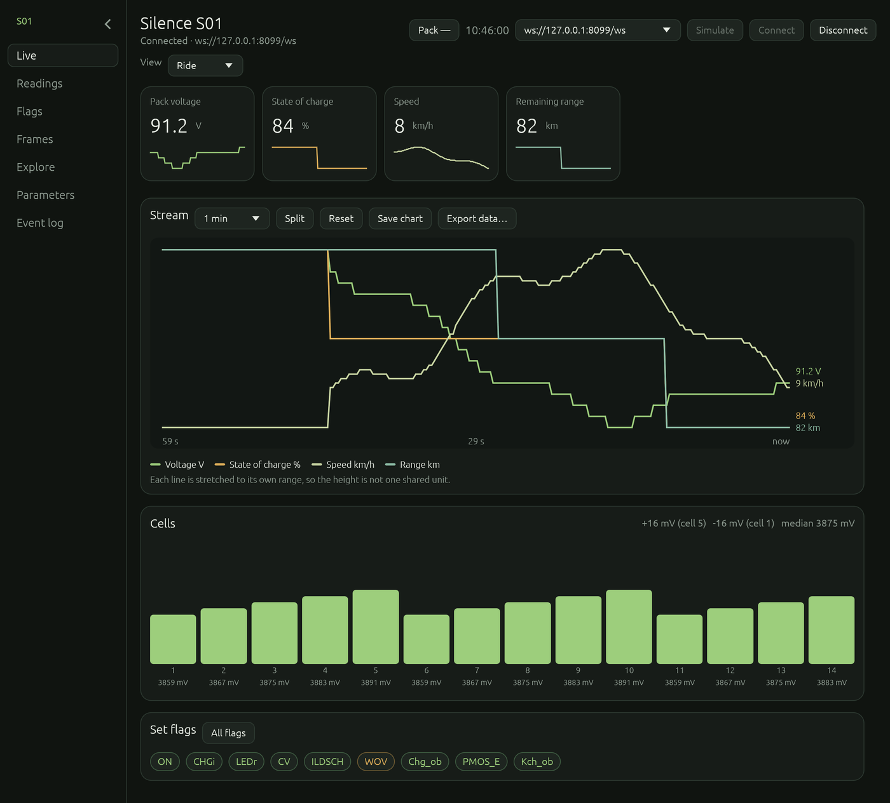
The Live screen on the Ride view (demo data).
View
Chooses which tiles and chart lines are shown: Pack, Ride, Charge, Drive or All, plus any view you saved yourself (section 12).
Tiles
The big number for each item, with a little line showing the last few seconds. Click one for its details.
Stream
A chart of the same items over time. 1 min / 5 min / 10 min / 15 min picks how far back it looks. Split gives each line its
own small chart instead of one shared chart (the button then says Overlay). Reset forgets the history and starts again.
Save chart makes a picture (PNG). Export data… saves the numbers as a spreadsheet file (CSV). Moving the pointer over the chart shows the
values at that moment. Markers you drop (section 7) appear on it.
Cells
One bar for each of the pack's 14 cells (numbered as the app numbers them), with the voltage underneath. Above them is the median (the middle cell voltage), the highest cell and the lowest cell, each as its distance from the median with its cell number, for example +50 mV (cell 3) -20 mV (cell 2) median 3986 mV. A bar turns amber when it is more than 30 mV from the median. Click a bar for its voltage, its distance from the median and the spread of the whole pack (highest minus lowest).
Set flags
The on and off signals that are on right now. Click one for its meaning, or All flags to go to the Flags screen.
Each line on the chart is stretched to its own range, so a line that only moves a little can still look dramatic.
Read the number at the end of the line, not the height.
5 Readings
The same values as Live, but as a plain list, grouped as Pack, Cells, Scooter and Motor. A dash (—) means the scooter has not sent that value yet.
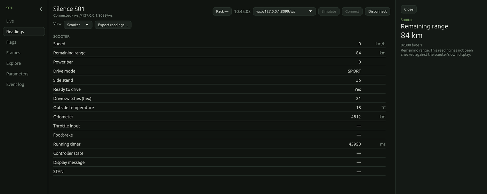
Readings on the Scooter view, with the details panel open (demo data).
View chooses a group (Pack, Cells, Scooter, Motor), or All, or one of your saved views.
Export readings… saves what is shown as a spreadsheet file (CSV).
On the All view you can click rows to switch them off, then name the view and press Save view (section 12).
Deselect all / Select all flips every row at once.
6 Flags
The scooter sends many single on/off signals packed into a few bytes: battery state, warnings and limits, inputs and outputs
(brakes, indicators, side stand, horn and so on), the motor controller's inputs, and the conditions that must be true before the
scooter is ready to drive. This screen lays them all out, one small pill for each.
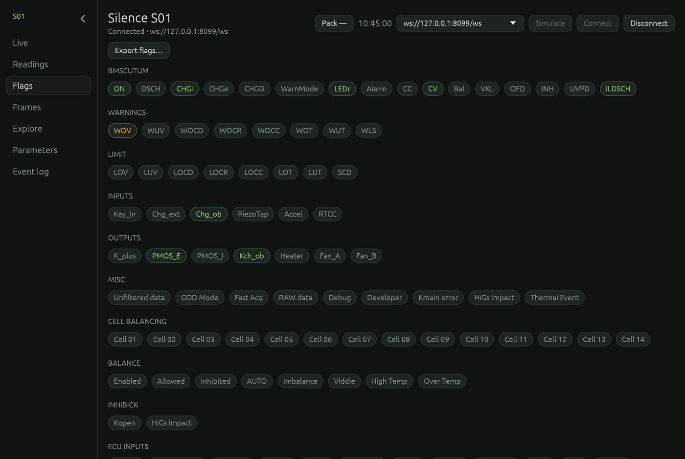
The first groups on the Flags screen (demo data). The list continues below the picture.
Lit pills are on. Green is an ordinary “on”, amber is a warning, red is an alarm. Grey pills are off.
Click a pill for what it means.
Export flags… saves every flag and its state as a spreadsheet file (CSV).
A group is empty (all grey) until the scooter has sent the frame it comes from.
7 Frames
This screen shows everything the scooter sends, frame by frame, whether the app understands it or not. It is also where you
record the bus to a file, play a recording back, and drop markers.
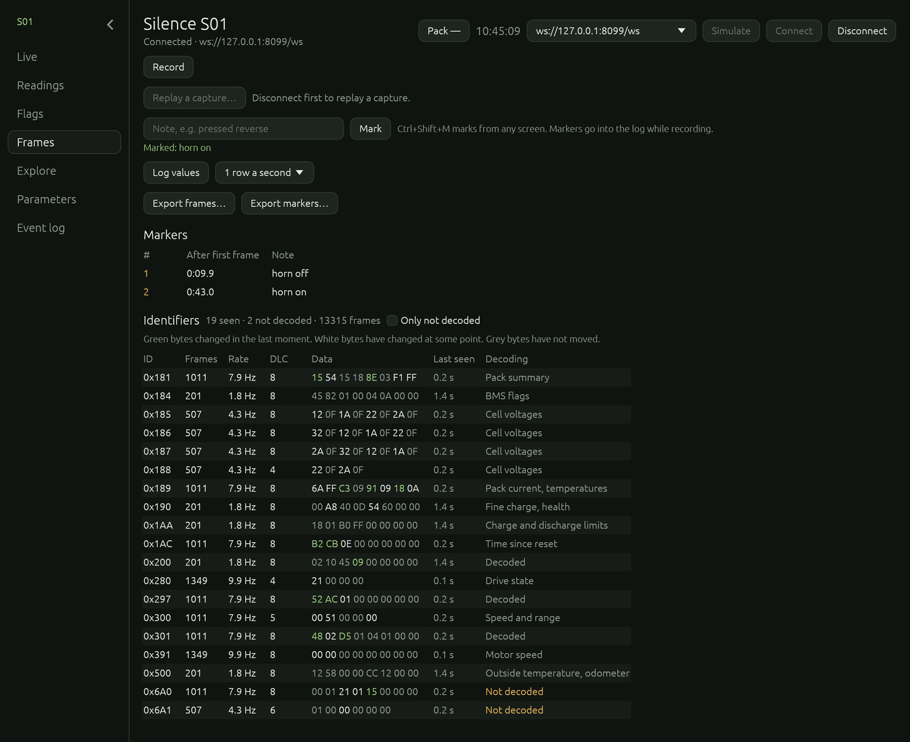
The Frames screen (demo data).
The identifiers table
Every kind of frame has a number called an identifier (ID), written like 0x280. The table has one row per ID:
Column
Meaning
ID
The frame's identifier, in hexadecimal.
Frames, Rate
How many have arrived, and how often (times a second).
DLC
How many data bytes the frame carries (0 to 8).
Data
The bytes. Green bytes changed in the last moment. White bytes have changed at some point. Grey bytes have not moved.
Last seen
How long ago the last frame came. It turns amber when a frame that is normally frequent has gone quiet.
Decoding
What the app makes of it (“Pack summary”, “Drive state”…), or Not decoded when nobody has worked it out yet.
Tick Only not decoded to hide everything the app already understands. Those are the frames to study with Explore (section 8).
Record and replay
Record (while connected) writes every frame to a log file. On a computer you choose where to save it first, and it is written as the frames arrive.
In the browser the recording is kept in the browser's own storage as it goes, so a long recording does not fill the page's memory, and it is downloaded when you press Stop recording (as several files if it is very large). If the page closes or the browser stops it first, the next time the page opens it offers Download it or Delete it for what was saved; the last few seconds may be missing. Markers you drop go into the log too.
On the page of a unit with an SD card there is still one button. When the page is connected to the unit's own bus and the unit's card is ready, the button says Record to the SD card (the label says so even before you connect, and the button works once you have): the unit writes the recording itself, so it carries on if the phone sleeps or loses WiFi, and it uses none of the browser's storage (section 11). Anywhere else it says Record and works as above: with no card, a card that is not ready, the Atomic CAN Base unit, the Windows and Mac programs, the simulation, or a replay. The choice is made when you press the button and stays for that recording. Markers you drop go into a card recording too. Stop recording stops it and shows Saved on the SD card as … with a Download button. If the unit is already recording to its card (started in another browser, or by itself at power-up) the same button reads Stop recording. Pressing Disconnect does not stop a card recording, because it belongs to the unit.
Replay a capture… (while disconnected) plays a log file back through the app, with no scooter, exactly as if it were live. While it plays, a bar under the header on every screen gives you Play / Pause, < and > to step back and forward, a step size (10 ms to 1 minute), a speed box (0.1× to 10×), Restart, Stop replay and a slider you can drag to any moment. The arrow keys step and Space plays or pauses. Stepping pauses the replay, so you can stop on a short moment (a burst of full power, say) and read the cells or any other screen exactly then. Going back rebuilds everything from the start of the log up to that moment; signals you made and markers you dropped stay. While a recording or a values log is being written the app does not let you jump, because the lines would be written twice, but play, pause and speed still work. Use log files made by the Record button.
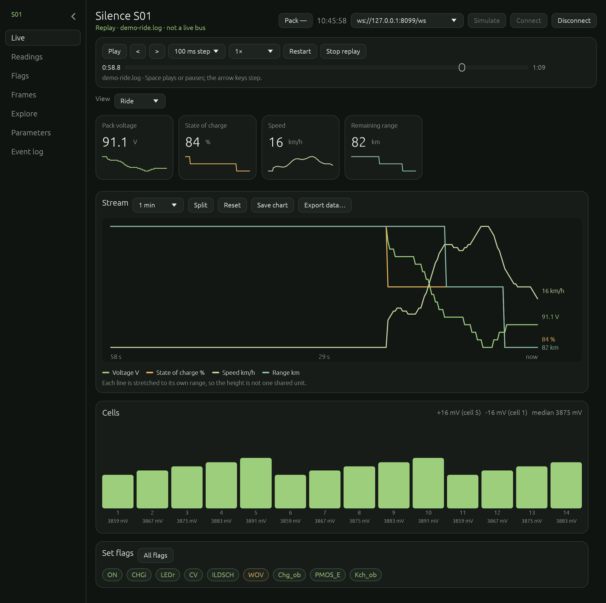
A replay paused at 0:58.8 (demo data). The bar is the same on every screen.
Replaying recordings from other tools (experimental)
Experimental support. Reading other tools' recordings was added in version 0.11.0. It has so far been tried only on small files written from each
format's documentation, not on real recordings from those tools, and the formats have variants. It may misread a file or refuse one it should accept.
Check what the replay bar says about the file (it names the format it read and what it left out), and if a file does not work, keep it and tell us.
Replay a capture… also takes recordings made by other software. Pick the file as usual (the file box offers .log, .txt,
.asc and .csv files). The app works out the format from the first lines of the file, so there is nothing to choose. The app's own
recordings and the CANable dump logs are read exactly as before and are not experimental.
Format
Where it comes from
How a line looks (invented examples)
candump log
The Linux SocketCAN tool candump with -L, and python-can. Make one with candump -L can0 > ride.log.
(1731234567.123456) can0 280#31000000 A time in seconds, the channel, then the identifier, a # and the data bytes with no spaces.
candump, classic layout
Plain candump output with time stamps (for example candump -ta can0).
(1731234567.123456) can0 280 [4] 31 00 00 00 A line may also carry RX or TX before the identifier. Without the time in brackets the file cannot be replayed at its own pace, and the app says so.
SavvyCAN CSV
SavvyCAN, when you save the frames as a CSV file.
A header row Time Stamp,ID,Extended,Dir,Bus,LEN,D1,D2,…,D8, then rows like 1004500,00000280,false,Rx,0,4,31,00,00,00,,,, The time is whole microseconds (a number with a decimal point is read as seconds). The columns are found by name, so their order does not matter.
Vector ASC
Vector CANalyzer and CANoe, and many other loggers that can export .asc.
0.012345 1 280 Rx d 4 31 00 00 00 The time in seconds, the channel, the identifier in hex, Rx or Tx, d for a data frame, the length and the bytes. The header lines (base hex timestamps absolute and so on) are read; a file that says base dec is read in decimal.
What is used. Only ordinary data frames with an 11-bit identifier, because that is all the scooter sends. Everything else is left out and counted, and the replay bar
says how many and why: frames with a 29-bit identifier, remote and error frames and CAN FD frames, frames the logger itself sent (marked Tx or TX),
frames on another channel, and lines that look like frames but cannot be read. If a file holds several channels (buses), the busiest one is used and the bar says which.
Time. Replay runs at the file's own pace, counted from the first frame that is kept. Absolute and relative time stamps both work. Times are read to the microsecond
and shown to the millisecond. These files have no markers, so the Markers table starts empty.
Not supported yet. PEAK PCAN-View .trc files, Vector .blf and ASAM .mf4 binary logs, CAN FD, and saving the app's recordings in
these formats. A file in one of those is refused, with a message.
A recording is a copy of your scooter's data. It can include numbers that identify your battery and your riding. Keep recordings to yourself unless you
mean to share them.
Markers
A marker is a note you drop at one moment: type something short, like pressed the horn, and press Mark (or press
Cmd+Shift+M on a Mac, Ctrl+Shift+M on Windows, from any screen). The marker is listed in the
Markers table with the time since the first frame, it appears on the Live chart, and it goes into a recording. Each marker also remembers what every
identifier was saying at that moment, which is what the Compare tool uses (section 8).
Log values and exports
Log values writes the main readings to a spreadsheet file (CSV) as you go: 4 rows a second, 1 a second, or 1 every 5 seconds. Press Stop logging to finish.
Export frames… saves the identifiers table, and Export markers… saves the markers, as spreadsheet files.
8 Explore
Two tools for working out what an unknown frame means. The idea behind both: make the scooter do one thing, and see which bytes move.
Compare two moments
Drop a marker, do something (press the horn, switch the lights, turn the handlebar lock), drop another marker, then compare the two.
You can drop markers right here with the Note box and Mark.
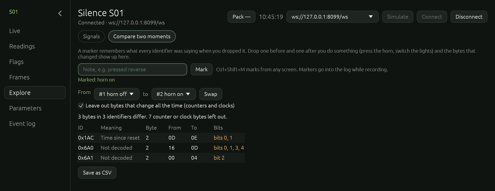
Comparing “horn off” with “horn on” (invented demo data). One byte of 0x6A1 goes from 00 to 04: bit 2 is the switch.
From / to choose the two markers (the newest two are chosen for you). Swap reverses them.
The table lists every byte that is different: the ID, what the app calls it, the byte number (the first byte is 0), the value at each marker, and
which bits changed. Bit 0 is the smallest.
Leave out bytes that change all the time (ticked to begin with) hides counters and clocks, which would otherwise be in every comparison. The line above the table says how
many were left out. Untick it to see them.
Save as CSV keeps the table.
Keep everything else still. The fewer other things change between the two markers, the shorter the list. If the scooter is moving, almost everything differs.
In the picture above, three bytes differ: a slow counter (0x1AC), a value that moves on its own (0x6A0), and the switch (0x6A1).
Doing the same thing twice and seeing the same byte move both times is how you become sure.
Signals
A signal reads some bytes of one frame as a number and draws it live. Use it when you have a guess (“bytes 2 and 3 of this frame are a temperature”)
and want to watch the number while the scooter does something.
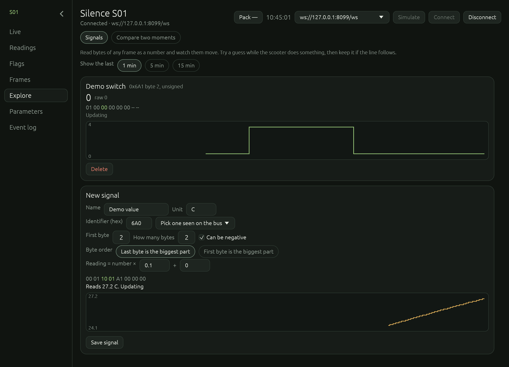
One saved signal (a switch) and a new one being tried (a value with a scale of 0.1). Invented demo data.
To make one, fill in the New signal form. You see the result straight away, before you save anything:
Field
What to put
Name, Unit
A name for it (you need one to save), and an optional unit such as C.
Identifier (hex)
The frame to read, like 6A0 or 0x6A0. Pick one seen on the bus lists the identifiers that have arrived, and marks the ones that are not decoded.
First byte, How many bytes
Which bytes of the frame (0 to 7), and how many (1 to 4). The bytes being read are highlighted in green in the line of bytes under the form.
Can be negative
Tick it if the number can go below zero (a “signed” number).
Byte order
Appears when you read more than one byte. Last byte is the biggest part is how most of the values the app already decodes are stored. If the number looks wrong, try the other one.
Reading = number × ___ + ___
A scale and an offset, to turn the raw number into units. A temperature in tenths of a degree has a scale of 0.1. A decimal comma is accepted.
Save signal keeps it (up to 8). Each saved signal shows its current value, the raw number, the bytes, and a chart. Show the last sets how many minutes the charts show.
Delete removes a signal after asking. A signal cannot be edited: delete it and make it again. Signals are kept in the same place as your saved views (section 12)
and come back next time you open the app.
A worked example. You suspect the horn is on a frame that is not decoded.
Connect. On the Frames screen, tick Only not decoded to see the candidates.
Go to Explore, Compare two moments. Type horn off and press Mark.
Press the horn and hold it. Type horn on and press Mark again. Release the horn.
Read the table. A byte that goes from 00 to 04 and shows bit 2 is a good suspect.
Go to Signals, enter that identifier and byte, and press the horn again while you watch the line. If it follows your finger, Save signal and give it a name.
The app does not know what a saved signal means, it only shows the number. When you are sure, write it down: that is how the project's notes grow.
9 Parameters
The battery and the motor controller (ECU) each keep a list of stored settings: limits, thresholds, identity numbers and so on. This screen reads them and shows them side by side.
At the top is the Battery clock.
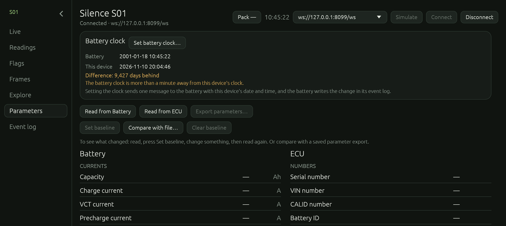
The top of the Parameters screen before anything has been read (demo). The battery clock in the demo is years behind, so the difference is shown in amber. Every parameter value is a dash until you press a Read button.
The battery clock
The battery keeps its own clock, which the event log uses for the time of every record. The card shows the battery's date and time next to this device's, and how far apart they are.
It turns amber when they are more than a minute apart. A battery clock that has lost its date (it restarts at January 2001 if the battery loses power) shows up here at once.
Press Set battery clock…. The app shows the time it will set, which is this device's own date and time (a computer's or a phone's, in its own time zone),
and asks you to confirm. Press Set the clock. The time is taken at that moment, so the seconds are right.
The app then watches the battery's clock for about three seconds and says whether it now matches. If it does not, check you are connected to the scooter and try again.
This sends one message to the battery, and the battery writes the change in its event log. It is the only thing the app ever writes. It is never done by itself, only when you press the button and confirm.
The button is off while there is no live connection (not in a simulation or a replay) or while a read is running, and for ten seconds after a set.
The battery has no time zone and does not follow daylight saving. When the clocks change, set it again.
The ESP32 unit. From a browser page served by the ESP32, setting the clock also needs the unit's firmware from app version 0.5.0 or later. With older firmware the unit refuses the message, and the card says the clock still does not match.
The settings
Read from Battery and Read from ECU ask the device for its settings, one at a time. This is a read only operation: the app never writes a setting.
If a device stops answering, the app asks again twice, then stops and says that the battery or the ECU stopped answering, and shows what it has.
Export parameters… saves what was read as a spreadsheet file (CSV).
To see what changed: read, press Set baseline, change something on the scooter, then read again. A list appears showing each parameter that changed, with its Before
and Now value. You can also press Compare with file… and pick a parameter export you saved earlier. Clear baseline forgets it.
Reads need a live scooter. With the simulation or a replay there is nothing to ask, so these buttons have no effect. Reading takes a little while, because the app asks for each item in turn.
10 Event log
The battery keeps a log of events it has recorded, each with a time, a code, some data and a text.
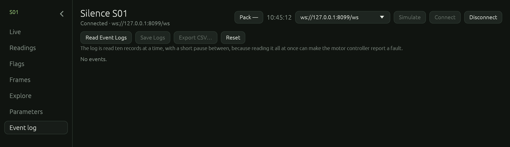
The Event log screen before a read.
Read Event Logs fetches the log from the battery, ten records at a time, with a short pause between each ten. A log of 160 records takes about 20 seconds, and the read stops at the oldest record. This is read only. The line under the buttons says why it is done this way: reading the whole log at once can make the motor controller report a fault, so the app does not do that.
If the motor controller reports a fault during the read anyway, the app stops the read, keeps the records it has, and says so. Switch the scooter off and on again to clear the fault.
The No. column is the record's number in the battery's log. The newest record has the highest number, so the list always starts with the newest, whatever its date says.
Save Logs saves the list as a text file, one line a record. Export CSV… saves it as a spreadsheet file. Both write, after the time, code, data and text, the record's number and the raw bytes of its three frames. If something about the log looks wrong, such as the dates, send that file: the raw bytes show exactly what the battery sent.
Reset only clears the list on the screen. It does not clear anything in the battery.
11 SD card
This screen is only in the browser page served by the ESP32 unit, and only when the unit has an SD card: an M5 ATOM Lite with a Unit CAN on its Grove port and an Atomic TF Card Base.
With any other hardware, and in the Windows and Mac programs, the menu has no SD card entry. On a phone it is under More.
The card has to be 16 GB or smaller.
The card
The top card says what the unit sees: Ready (with the card's name, size, what is used and what is free), No card found, a card that has no file system the unit can read, a card that is too big, or Ejected. The unit looks for a card every few seconds, so one put in later appears by itself.
Eject… stops any recording and lets go of the card, so it is safe to take out. Use the card again mounts it again.
Format… erases everything on the card and makes a new FAT file system. The app asks first, says how much is on the card, and the card cannot be used for up to a minute. It is not offered while a recording is running or the unit is busy with another job.
There is no card-detect switch in the card base, so pulling a card out while it is in use can damage a file. Use Eject first. A card that stops answering is noticed within a few seconds and shown as not found.
Recording to the card
A recording to the card is started and stopped with the Record button on the Frames screen, the one button for recording wherever it goes. (This card has a Go to the Record button shortcut.) It makes the unit write every frame it hears to a text file in the card's recordings folder, in the same format this app records, so you can download the file and open it with Replay a capture… on the Frames screen. The file is started when the first frame arrives. A file that grows past 64 MB continues in a new one.
The line under the buttons shows the file, how many frames and how much has been written, and how many frames the unit could not keep (the unit says so in the file too). The unit's recording does not need a phone to stay connected.
Start recording by itself whenever the unit has a card makes the unit start a recording at power-up. It stays on until you untick it. Stopping a recording by hand keeps it stopped until the card is put in again or you start one.
The unit has no clock of its own. It takes the time from the device that opens the page, and keeps counting until it is powered off. A recording started with the clock set is named from the date and time (rec-20261119-214501.log) and carries that device's time of day. One started before any page has set the clock is numbered (rec-0001.log) and its times count from power-up. If the clock is set while a recording runs, the unit starts a new file so the times do not jump.
Files
The Files card browses the card: click a folder to open it, and click Card or a folder name above the list to go back. Each file has Download and Delete…; each folder has Delete…. Deleting asks first, a folder goes with everything in it, and it cannot be undone.
Download hands the file to your browser, which saves it as it arrives. The file being recorded cannot be downloaded or deleted until the recording is stopped.
Upload a file here… sends a file from this device to the folder you are in. A bar shows how far it has got. The unit writes it under a temporary name and gives it its real name only when all of it has arrived, so a cut-off upload leaves no half file. It refuses a file that will not fit.
Create folder makes a folder in the folder you are in.
Names can use plain letters, digits, spaces and . _ - ( ), up to 100 characters. They cannot contain \ / : * ? " < > |, and cannot start or end with a space or end with a dot. The unit shows at most 300 items of a folder.
The unit does one transfer, delete or format at a time and says busy if you ask for a second. While it works on one, other pages show it too. Transfers share the unit's WiFi with the live feed, so a long download can slow the live screens a little, and a read of the event log or the parameters can take longer.
Anyone on the unit's WiFi network can use this screen. The network's password is the only protection, so anyone who knows it could format the card.
12 Saved views
On Live and Readings you can keep your own arrangement of items.
Choose the All view. Click tiles (Live) or rows (Readings) to switch items off; faded ones are off.
Type a name in View name and press Save view. The name has to be new on that screen and different from the built-in views.
The view now appears in the View menu. Choose it any time.
To remove it, choose it and press Delete view. The app asks first.
Saved views, and the signals from the Explore screen, survive closing the app.
On a computer they are one small text file: on a Mac ~/Library/Application Support/Silence S01/views.txt, on Windows %APPDATA%\Silence S01\views.txt.
In the browser they are kept on the ESP32 unit itself, so every phone and computer that opens the page sees the same views.
If the app cannot reach that storage it says so, and the views then last only until you close the app or page.
13 On a phone
When the window is narrow (a phone held upright), the app changes layout by itself. This happens on a computer too if you make the window narrow.
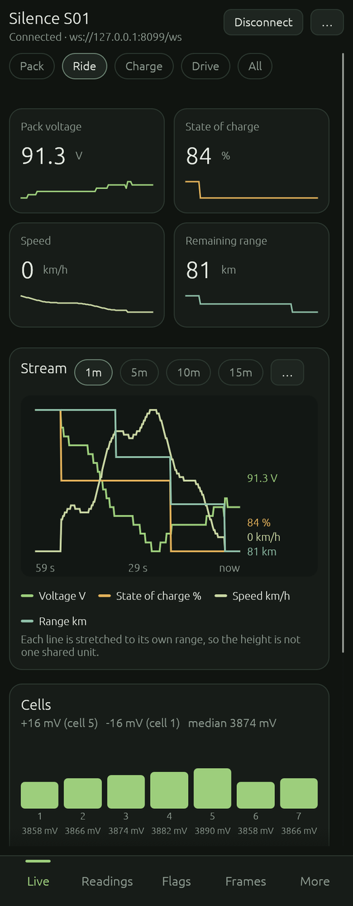
Live on a phone.
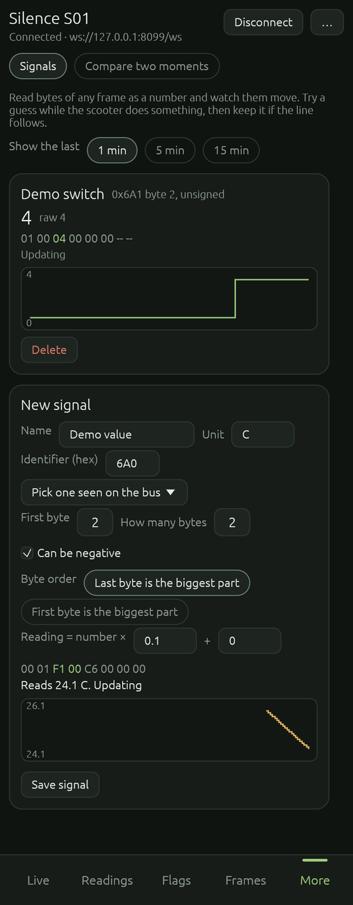
Explore on a phone.
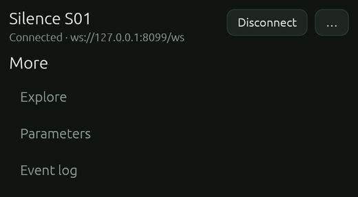
The More page.
The menu becomes a tab bar along the bottom: Live, Readings, Flags, Frames and More. More leads to Explore, Parameters and the Event log (and, on a unit with an SD card, the SD card).
The bar at the top keeps one Connect / Disconnect button and a … menu that holds the pack ID, the clock, the port box (on a computer), Simulate and the version.
The views on Live become a row of buttons; the chart's time spans become 1m 5m 10m 15m with a … menu for Split, Reset, Save chart and Export data.
Frames become one small card per identifier, and details open as a sheet from the bottom. Tap Close to put it away.
14 When something goes wrong
The port box says “No serial port” (or “No device”).
Check the adapter is plugged in, then wait a couple of seconds: the list refreshes by itself. On Windows the adapter may need its driver. In the browser, check you are on the S01-Monitor WiFi.
It says Connected but nothing moves.
The scooter may be asleep (the bus goes quiet when it is off). Switch it on and watch the Frames screen: the counts should climb. If the numbers froze after working, Disconnect and Connect again.
“The connection stopped unexpectedly.”
The adapter was unplugged or the feed failed. Reconnect it and press Connect.
The Event log says the motor controller reported a fault.
The app stopped the read to be safe. Switch the scooter off and on again; that clears it. Then read the log again. If it happens every time, tell us which controller your scooter has (Sevcon or Votol) and what the dash shows.
The Event log says it “stopped part way” or “came back out of order”.
A page of records did not arrive, or a frame was lost. What was read is kept. Press Read Event Logs again.
A Read button says “stopped answering”.
The battery or the ECU did not reply. Try again; make sure the scooter is switched on.
The window is blank (desktop).
The graphics driver may not support OpenGL. Update the driver.
The browser page will not load.
Check you are on the unit's WiFi and use http://192.168.4.1/. If you changed the page on the unit and it looks old, close it and open it again; on an iPhone, delete the Home Screen icon and add it again.
I saved a view or signal and it is gone.
If the app showed a message about the saved views, it could not reach its storage and the item lasted only for that session.
Windows or macOS refuses to open the app.
See “Open the app” in section 2. The program is not signed, which is why the warning appears.
15 Words used in this guide
CAN bus
The shared wire the scooter's parts use to talk to each other.
Frame
One short message on the bus: an identifier and up to 8 bytes of data.
Identifier (ID)
The number that says what kind of frame it is, written in hexadecimal, like 0x280.
Byte, bit
A byte is one of the data values in a frame (0 to 255, shown as two hex digits). It is made of 8 bits, numbered 0 to 7; bit 0 is the smallest. Bytes are numbered from 0.
Hexadecimal (hex)
A way to write numbers with the digits 0 to 9 and A to F. 0A is 10, FF is 255.
Decoded
The app knows what the frame's bytes mean and shows them as readings.
Marker
A note dropped at one moment, which also remembers what the bus said then.
Signal
Bytes of a frame read as a number with a scale and an offset, shown live.
Counter, clock
A byte that changes on almost every frame because it counts or keeps time. It tells you nothing about what the scooter is doing.
ECU
The scooter's main control unit.
CANable, slcan
A small USB adapter that connects a computer to a CAN bus, and the simple text protocol it speaks.
CSV
A plain spreadsheet file that Excel, Numbers and others open.
Silence S01 Monitor @VERSION@. What changed in this and every earlier version is in CHANGELOG.md, in the same folder as this guide.